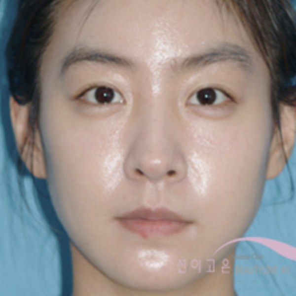
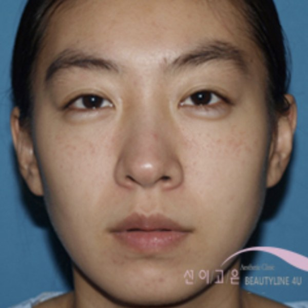
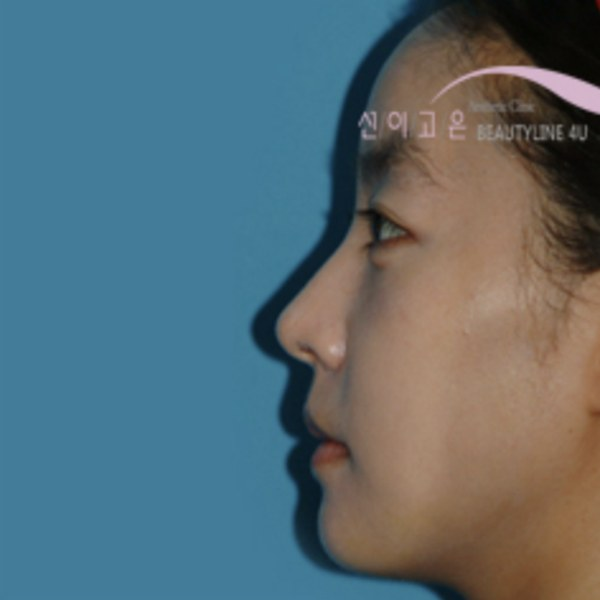
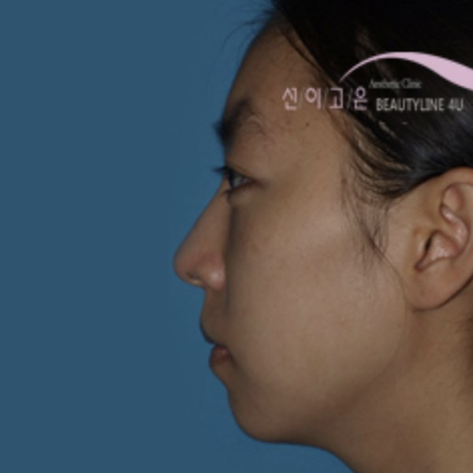
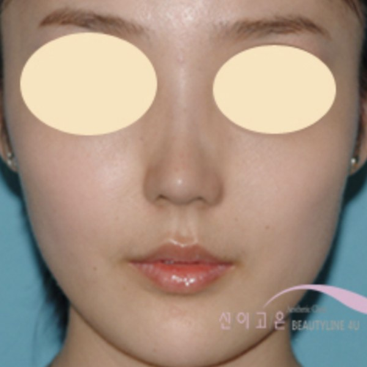
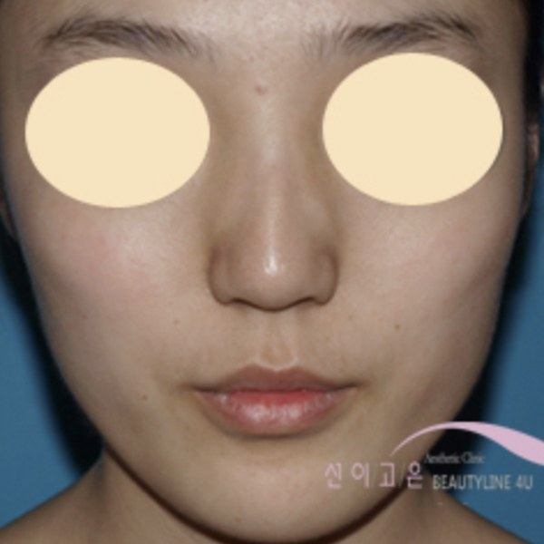
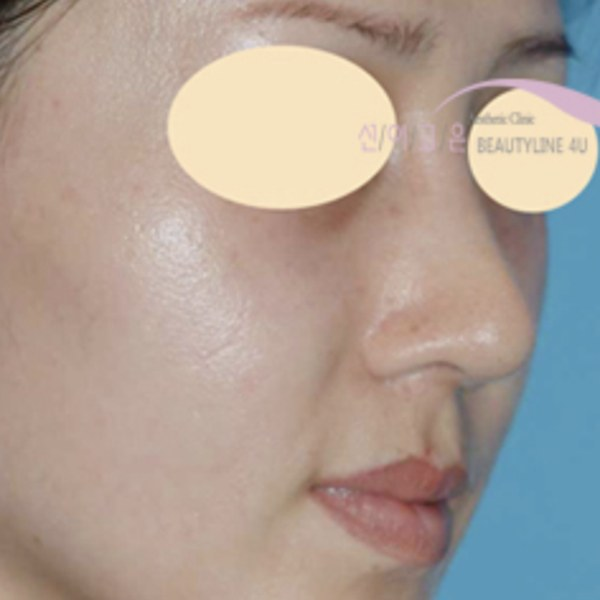
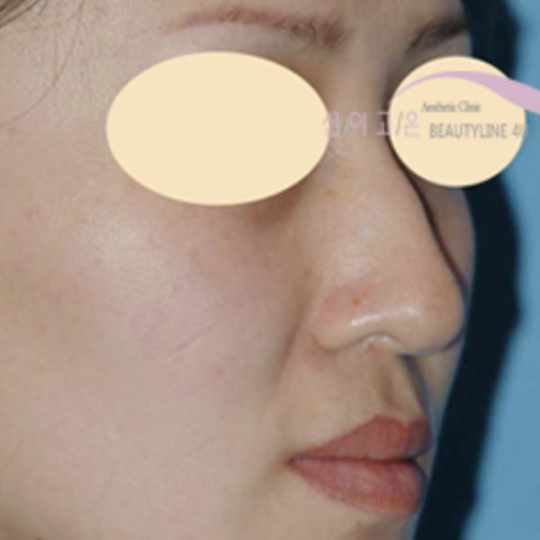

Contour, Volume
and Balance
Forehead, nose, cheeks and smile are assessed together for overall balance
Procedures & Treatments
T-Zone Contouring
Refines the forehead-to-nose line
3D Facial Fat Grafting
Autologous fat restores volume in hollow areas
Gummy Smile Correction
Reduces gum exposure when smiling
Who May Benefit
- A flat profile or hollow areas
- Seeking volume restoration with autologous tissue
- Concerns about gum exposure when smiling
Personalized Care,
Every Step of the Way
Personalized Consultation
Share your concerns by phone, online or messenger
Medical Assessment & Treatment Planning
Your physician recommends a suitable plan and explains recovery
Surgery & Treatment
Performed after pre-operative checks, with safety and privacy first
Recovery & Follow-up Care
Personalized recovery guidance and follow-up care
Facial Contouring


BeforeAfter

BeforeAfter

BeforeAfter

BeforeAfterActual patients, shared with consent. Results vary and are not guaranteed. Risks may include bleeding, infection, swelling, asymmetry and scarring
Questions
How long is the recovery?
It depends on the procedure and your condition. We explain it during consultation
What kind of anesthesia is used?
Decided after reviewing the procedure and your health, and explained in advance
Can I consult before visiting Korea?
Yes. Send photos and questions by messenger; the final plan is confirmed after an in-person exam
Premium Care, Within Reach
Consult and book by phone, online, KakaoTalk, LINE, WhatsApp or WeChat